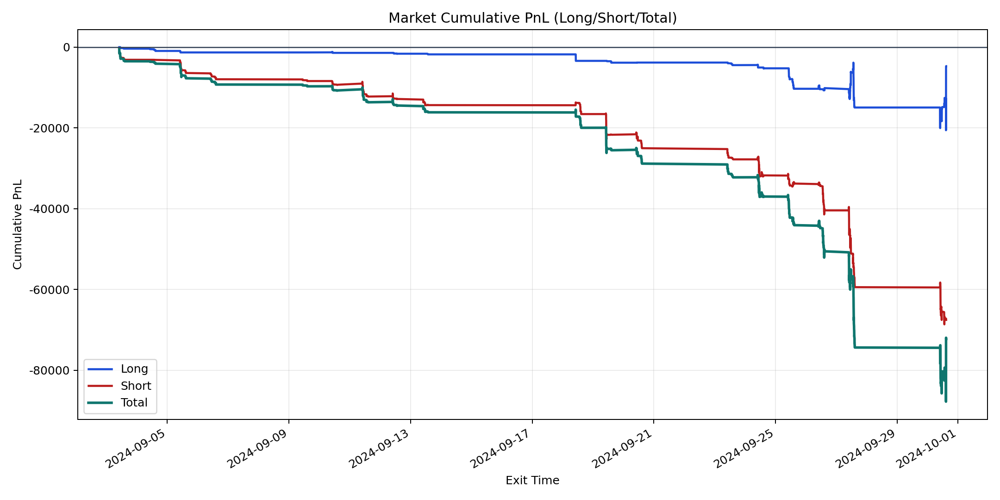
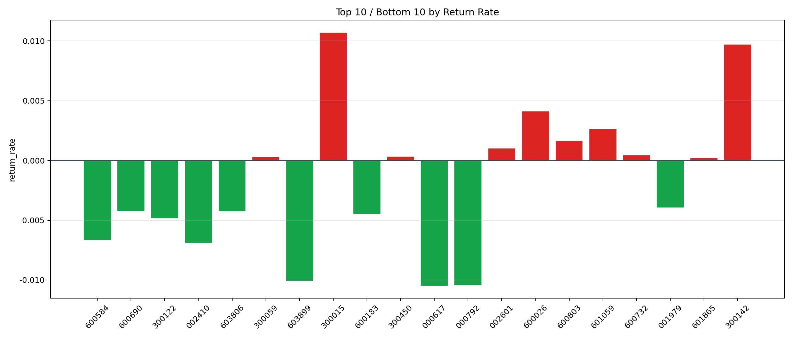

| repo_root | /home/haoranyou/data/output/dynamic_AUM_TAKER |
|---|---|
| period_months | 1 |
| period_label | 2024-09-03_to_2024-09-30 |
| start_time | 2024-09-03 10:06:12 |
| end_time | 2024-09-30 14:36:22 |
| n_trades | 2478 |
| n_symbols | 61 |
| total_pnl | -72228.98250000039 |
| long_total_pnl | -4703.5469999998295 |
| short_total_pnl | -67525.43550000056 |
| total_entry_notional | 45225719.0 |
| long_entry_notional | 13689354.0 |
| short_entry_notional | 31536365.0 |
| total_return_rate | -0.0015970775942777248 |
| long_return_rate | -0.00034359159679849243 |
| short_return_rate | -0.002141192730994855 |
| top_symbols_by_return | ["300015", "300142", "600026", "601059", "600803", "002601", "600732", "300450", "300059", "601865"] |
| bottom_symbols_by_return | ["000617", "000792", "603899", "002410", "600584", "300122", "600183", "603806", "600690", "001979"] |

